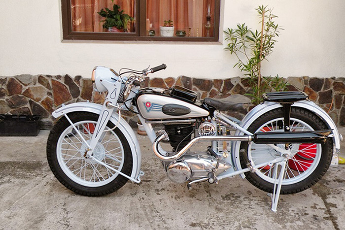

Репортаж с ретро мотовыставки

14 мая 2017
На днях свои двери открыла уникальная выставка «Матацыкл на вуліцах Мінска. Гісторыя пра людзей і для людзей».
На ней представлено несколько десятков ретромотоциклов — отреставрированных и просто сохраненных в частных коллекциях.
Около сорока самых разных мотоциклов: довоенных, времен Второй мировой войны, послевоенных, советских, французских, итальянских...
Подробнее
Отреставрированный мотоцикл Victoria K35 1935

10 апреля 2017
Первые двухколесные моторизованные транспортные средства появились в конце 19-го века. Мотоциклы быстро стали частью современного
общества и выпускаются больше столетия. В наши дни старая техника имеет достаточно высокую ценность, особенно это касается редких моделей.
Многие старинные мотоциклы сгнивают на свалке, но некоторым везет больше, и они становятся частью коллекций или...
Подробнее